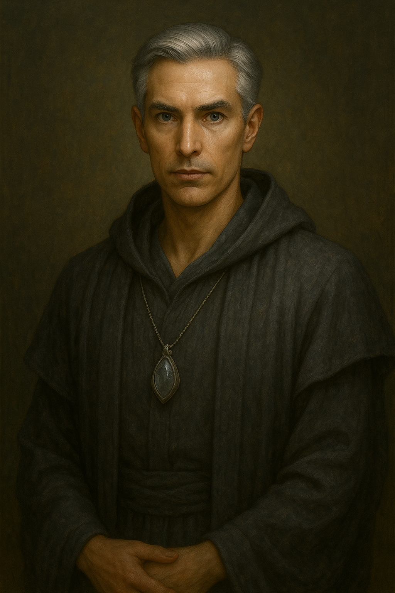

Appearance
- Handsome human projection; sharp silver eyes; calm, melodic voice.
- Presence feels slightly out of step with time and space.
- Always composed; gestures precise, economical.
Mysterious crystalsmith and temporal adept—an ageless being walking in human shape, speaking in memory and resonance.

Elias takes an interest in Vear that hovers between mentorship and manipulation. He understands more of Vear’s path than he reveals, offering truths in fragments—enough to set a course, never enough to remove the cost. Elias isn’t the kind of figure who walks in and pushes events around openly. Instead, he’s a temporal gardener — nudging tiny, almost invisible details so that decades later, the shape of Vear’s life bends in a different direction.
Forged by the Rulie using Blue Crystal and Resonant Compression, the blade was seeded beneath Edson to wait for the Dreamer whose soul carried the right tone. Elias created the song not as prophecy, but as memory—laid down long ago for this moment.
“Bound in stone, the star-born flame, Forged in wrath, without a name. Hands of men shall tug in vainl., For strength alone shall earn no gain. Only the soul who walks the storm, With heart made fire and spirit torn, Shall stir the blade and break the seal, When truth is found and wounds shall heal. Eyes veiled dark, yet vision wide, He comes with silence as his guide. Not born of time, nor bound by fate— He wakes the sword, and opens the gate. “